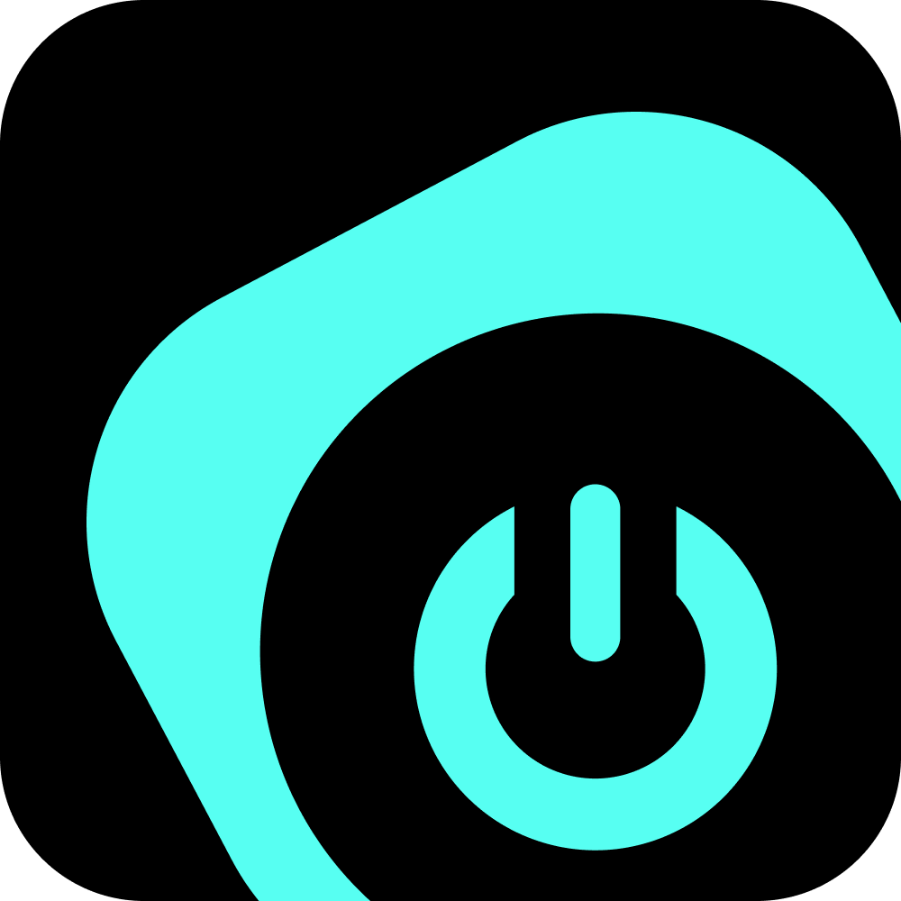

Desktop Vision Example App

Overview:
Step 1: Get oauth code through Destop Vision oauth
Step 2: Get access token from server using oauth code
Step 3: Get computers that belong to connected DV account
Step 4: Select computer to connect & stream from
Desktop Vision Oauth:
Current Stream:
This stream will be added to the scene as a Desktop Vision Computer
Scene: